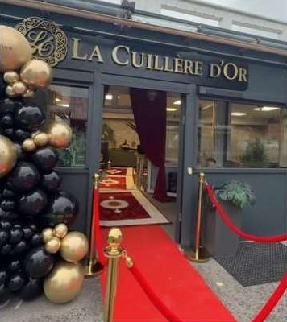

Infos pratiques
On vous attend.
45 avenue Jean Jaurès à Audincourt. Réservation et commande par téléphone.
Horaires
Sur place ou à emporter
Toute la carte, aussi chez vous.
Commandez par téléphone et passez récupérer vos plats au restaurant.
- 1Appelez le 03 81 31 35 06
- 2Choisissez vos plats dans la carte
- 3Récupérez votre commande au 45 avenue Jean Jaurès
